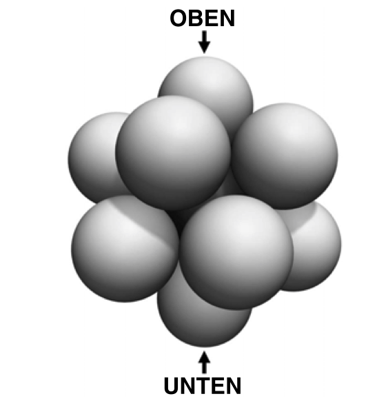

<!doctype html>
<html lang="de">

  <head>
    <meta charset="utf-8">
        <meta name="apple-mobile-web-app-capable" content="yes">
    <title>GeoGebra</title>

    <meta name="description" content="TODO">
    <meta name="author" content="Martin Guggisberg">

    <meta name="apple-mobile-web-app-capable" content="yes" />
    <meta name="apple-mobile-web-app-status-bar-style" content="black-translucent" />

    <meta name="viewport" content="width=device-width, initial-scale=1.0, maximum-scale=1.0, user-scalable=no">

    <!-- change to https -->
    <script>
      if (window.location.host.indexOf('github.io') > -1 && window.location.protocol != "https:"){
          window.location.protocol = "https";
      }
    </script>

    <link rel="shortcut icon" type="image/x-icon" href="favicon.ico" />


    <link rel="stylesheet" href="../../presentations/reveal2015/css/reveal.min.css">
  
    <link rel="stylesheet" href="../../presentations/reveal2015/css/theme/mw2.css" id="theme">
    <!-- Code syntax highlighting -->
    <link rel="stylesheet" href="../../presentations/reveal2015/lib/css/zenburn.css">

<!-- absolute
    <link rel="stylesheet" href="https://mgje.github.io/presentations/reveal2015/css/reveal.min.css">
    <link rel="stylesheet" href="https://mgje.github.io/presentations/reveal2015/css/theme/mw2.css" id="theme">
    
    <link rel="stylesheet" href="https://mgje.github.io/presentations/reveal2015/lib/css/zenburn.css">
-->

    <!-- If the query includes 'print-pdf', use the PDF print sheet -->
    <script>
      document.write( '<link rel="stylesheet" href="https://mgje.github.io/presentations/reveal2015/css/print/' + ( window.location.search.match( /print-pdf/gi ) ? 'pdf' : 'paper' ) + '.css" type="text/css" media="print">' );
    </script>

    <!--[if lt IE 9]>
    <script src="https://mgje.github.io/presentations/reveal2015/lib/js/html5shiv.js"></script>
    <![endif]-->
  </head>

  <body>

    <div class="reveal">

<!-- Any section element inside of this container is displayed as a slide -->
<div class="slides">
        
<!-- Einleitung -->
<section data-markdown data-separator="---" data-separator-vertical="--" data-background="#FFFFFF">
<script type="text/template">
### GeoGebra Workshop 
<br>
<p style="background-color:#81BABE">

</p>
<br>
#### 29.6.2016 Kanti Wettingen

<br>
#####  Martin Guggisberg & Torsten Linnemann 
---
<p>
<div style="float:left">

</div>
<div style="text-align:left">
&nbsp;Torsten Linnemann<br>
&nbsp;PH FHNW<br>
&nbsp;Deutschschweizerische Mathematikkommission<br>

&nbsp;Gymnasium Oberwil<br> 
&nbsp;tolinnemann@gmail.com<br>
</div>
</p>
---
<p>
<div style="float:left">

</div>
<div style="text-align:left">
&nbsp;Martin Guggisberg<br>
&nbsp;SVIA Vorstand<br>
&nbsp;Ressort Projekte<br>
<br>
&nbsp;Departement Mathematik<br>
&nbsp;und Informatik<br>
&nbsp;Universität Basel<br>
&nbsp;martin.guggisberg@unibas.ch
</div>
</p>

---
## Geogebra Institute 

### PH FHNW Schweiz

[https://www.geogebra.org/institutes](https://www.geogebra.org/institutes)


--
### Befürchtungen eines Kollegen

### &nbsp;

```
Trainieren sie (SuS) das Darstellungsvermögen nicht besser, in dem sie versuchen, im eigenen Kopf die verschiedenen Objekte sich vorzustellen? 
``` LP aus BL


---

## Agenda 

- Vorstellungsrunde
- Basics: Bestandteile von Geogebra, Geogebratube
- Beispiele zu Funktionen und Statistik
- Workshopphase 
- CAS am Beispiel von Maturaufgaben
- Vektorgeometrie
- Animationen
- Prüfungsmodus mit Vektoren
- Dessert
  - Modellierung dynamischer Systeme
  - Stochastik
  - Funktionen erforschen
  - lin. Abbildungen
  - Fermat-Punkt
  - Dichteste Kugelpackung

Alle Unterlagen sind Online:

https://mgje.github.io/geogebra/slides/wettingen2016.html
---

## Geogebra
- Beginn der Entwicklung: 2001 
- Markus Hohenwarter, Universität Salzburg
- Zunächst: 
  - Algebra 
  - Geometrie
- Erweitert durch
  - Computeralgebrasystem
  - Tabellenkalkulation
  - 3d-Geometrie
  - Statistik
- Neu auch: Geogebra-Tube: Plattform für Materialien
- Open Source
---

## Schuleinsatz

- Demonstrationsmaterialien für Lehrkraft

- Erstellen von Bildern, Diagrammen für Lehrkraft

- Nutzen von Geogebratube durch Lernende

- Allenfalls Nutzen des Programms durch Lernende

- Repetition!


---
## Funktionalitäten


--- 

## Verwendung der Software:

<br>

- Festinstalliert auf Windows, Mac oder Linux
- Festinstalliert mit Prüfungsumgebung

- Online im Browser: https://www.geogebra.org/apps
- auf Tablets und Smartphones (GeoGebra Grafikrechner)

- **wichtig:** Versionen ab ***5.0*** verwenden

---
## Graphische Schnittstelle 

## Web vs. Desktop


--
## Desktop Oberfläche 
--

--

--
## Einstellungen


--

## Web Oberfläche

---


---


---


## Materialien  finden und nutzen 

[https://www.geogebra.org/search](https://www.geogebra.org/search)


--


Lernvideos: [YouTube GeoGebra channel](https://www.youtube.com/watch?v=m_v9hKFlOpw) 

---
# Geogebra Materialien

GeoGebra Anwendungen selbständig erproben und weitere Beispiele in GeoGebraTube finden.


<br><br>
---

# Beispiele zu Funktionen
---
## Graphen von Funktionen


---
## Verkettung von Funktionen


[https://www.geogebra.org/m/jpedSfUh](https://www.geogebra.org/m/jpedSfUh)


--
### Punktsymmetrie 


[Link auf GeoGebraTube](https://tube.geogebra.org/material/simple/id/117646)
--- 
### Spiegelungen an x- und y-Achse

$$ f(x) = \sqrt{x} $$
$$ g(x) = f(-x) $$
$$ h(x) = -f(x) $$
$$ j(x) = -f(-x) $$


[Link auf GeoGebraTube](https://tube.geogebra.org/m/1971013)
---
### Parametrisierung einer Funktion


[Link auf GeoGebraTube](https://tube.geogebra.org/material/simple/id/50132)

---
## Quadratische Funktionen

- [Graph einer quadratischen Funktion](https://tube.geogebra.org/student/m163691)

- [Scheitelpunkt Parametrisierung](https://tube.geogebra.org/student/m163735)

- [Nullstellen Parametrisierung](https://tube.geogebra.org/student/m163747)

- [Verschiedene Arten der Parametrisierung](https://tube.geogebra.org/student/b77536#material/3574)

- [Parabel auf Fontäne verschieben](https://tube.geogebra.org/student/b409833#material/410469)

- [Aufgaben zu Scheitelpunktsform](https://tube.geogebra.org/student/m79644)

---
## Trigonometrie 
- Cosinussatz beweisen:
https://tube.geogebra.org/student/m8932

- Sinussatz beweisen:
https://tube.geogebra.org/student/m169620

- unendlich viele Aufgaben zum Cosinus:
https://tube.geogebra.org/student/m465263

- unendlich viele Aufgaben zum Sinussatz
https://tube.geogebra.org/material/show/id/491103


---
## Trigonometrie - Geogebra-Books

- Geogebra-Book: historischer Zugang von Hipparchos
https://tube.geogebra.org/student/b775727

- Winkelfunktionen, Einheitskreis, Bogenmass:
https://tube.geogebra.org/student/b85550
---
## Riemansche Summen

Ober- und Untersumme[B1](https://tube.geogebra.org/material/show/id/101) [B2](https://tube.geogebra.org/material/show/id/52750)

---
## Statistik

[Beispiel Daten](https://www.geogebra.org/m/Km7WnFm5) 

---
## Beispiele auf GeogebraTube

- Stochastik [B1](https://tube.geogebra.org/material/show/id/3587) [B2](https://tube.geogebra.org/material/show/id/120337) [B3](https://tube.geogebra.org/material/show/id/86141) [B4](https://tube.geogebra.org/student/b71489)
<br><br>

- Regression [B1](https://tube.geogebra.org/material/show/id/108888) [B2](https://tube.geogebra.org/material/show/id/112292) [B3](https://tube.geogebra.org/student/b154316) 
---

# Workshop

Alle Unterlagen sind Online:

https://mgje.github.io/geogebra/slides/wettingen2016.html

---
# CAS am Beispiel von Maturaufgaben
--
### Finde ausgezeichnete Punkte einer Funktionsschar

\\( p(x) = a \cdot x^5-x^4+b \cdot x^3-b \cdot x^2+x \\)

Für den Fall: $a= \frac{1}{10}$ und $b=3$

1. Finden Sie die Nullstellen der Funktion $p(x)$
* Finden Sie die Extremalstellen und Extremalwerte
* Finden Sie die Wendepunkte
* Berechnen Sie den Flächeninhalt zwischnen der x-Achse und der Funktion $p(x)$

--


[https://tube.geogebra.org/student/m833905](https://tube.geogebra.org/student/m833905)

--

### Faktorisiere das Polynom 

\\( q(x) = -\frac{1}{10} \cdot x^5+ \frac{19}{20} x^4 - \frac{11}{4} \cdot x^3+ \frac{53}{20} \cdot x^2 -\{3}{4}x \\)

---
### Finde eine Funktion $f(x)$ dritten Grades mit den Eigenschaften:

* $f(x)$ geht durch die Punkte $(-1,1)$ und $(1,-1)$

* An der Stelle $x=1$ hat die Funktion $f(x)$ die Steigung -1, also $f(1)' = -1$

* An der Stelle $x=-1$ hat $f(x)$ die Steigung 1, also $f(-1)' = 1$ 
---
CAS Befehle

```apache
f(x) := a x^3 + b x^2+ c x+d

f(-1) = 1

f(1) = -1

f'(1)=-1

f'(-1) = 1

Löse[{$2, $3, $4, $5},{a, b, c, d}]

g(x):=Ersetze[$1,$6]

```
---
### Auftrag: Testen Sie es gleich aus!

[CAS im Browser](https://tube.geogebra.org/material/show/id/919901)

---
## Funktionen mit Parameter 
## (Maturaufgabe Oberwil 2014)


---
### Lösung mit CAS

[Link GeoGebraTube](https://tube.geogebra.org/material/show/id/1997437)

CAS-Fenster

```apache
a0 := 4.51

f(x, a) := -a x^3 + (a + 1) x^2

g(x) := f(x,a0)

Liste1 := Löse[g'(x)=0]

Mg := Element[Liste1, 2]

MP := Schneide[Mg, g]

```
---
[Link GeoGebraTube](https://tube.geogebra.org/student/m765169)

<video class="stretch" data-autoplay loop controls>
        <source data-src="media/movies/maturaOberwil2.m4v" type="video/mp4" />
        <source data-src="media/movies/maturaOberwil2.webm" type="video/webm" />
        Your browser does not support the <code>video</code> element.
</video>
---

# Vektorgeometrie

---
# Vektorgeometrie
- Ein Spat
- Parameterform der Ebenengleichung
- Vermassung
- Würfelschnitte
- Maturaufgabe

---
### Ein Spat

<video width="802" height="602" data-autoplay loop controls>
        <source data-src="media/movies/spat.m4v" type="video/mp4" />
        <source data-src="media/movies/spat.webm" type="video/webm" />
        Your browser does not support the <code>video</code> element.
</video>

- [https://tube.geogebra.org/student/m320977](https://tube.geogebra.org/student/m320977)

---

### Parameterform der Ebenengleichung

<video width="854" height="534" data-autoplay loop controls>
        <source data-src="media/movies/parametergrafik.m4v" type="video/mp4" />
        <source data-src="media/movies/parametergrafik.webm" type="video/webm" />
        Your browser does not support the <code>video</code> element.
</video>

- [https://tube.geogebra.org/student/m923395](https://tube.geogebra.org/student/m923395)
---

## Vermassung

<p>
<div style="float:left">

</div>
<div style="text-align:left">


- Pyramide darstellen<br>
- Punkte für Vermassungspfeile definieren<br>
- Doppelpfeile durch 2 Vektoren, Längenangabe durch Strecke <br>
- Geogebra ist kein CAD-Programm<br> 
- Konstruktion komplexerer Körper kaum möglich<br> 
- [https://tube.geogebra.org/material/simple/id/1249599](https://tube.geogebra.org/material/simple/id/1249599)

</div>
</p>

<br>


---

## Darstellende Geometrie

Zum Selberlesen:

- Geogebra-Book Wolfgang Wengler:<br>
[https://tube.geogebra.org/student/b109019](https://tube.geogebra.org/student/b109019)

- Geogebra-Book Andreas Lindner:<br>
[https://tube.geogebra.org/student/b309269](https://tube.geogebra.org/student/b309269)


---

### Würfelschnitte
<video width="996" height="542" data-autoplay loop controls>
        <source data-src="media/movies/wuerfel.m4v" type="video/mp4" />
        <source data-src="media/movies/wuerfel.webm" type="video/webm" />
        Your browser does not support the <code>video</code> element.
</video>

- Diagonale Ebene [https://tube.geogebra.org/student/m321009](https://tube.geogebra.org/student/m321009)
- Beliebige Ebene [https://tube.geogebra.org/student/m321021](https://tube.geogebra.org/student/m321021)


--

## Optimierungsaufgabe 3D


Finde einen maximalen Zylinder in einer Kugel


[](https://tube.geogebra.org/material/show/id/197275)

[Extremwertaufgabe](https://tube.geogebra.org/material/show/id/188190)

--

### Würfelnetze

[https://tube.geogebra.org/student/m713395](https://tube.geogebra.org/student/m713395)


--

### Dandelinsche Kugel

[https://tube.geogebra.org/student/b151034#material/122750](https://tube.geogebra.org/student/b151034#material/122750)


---
# Animationen

- durch Veränderung der Position

- durch Rotation um einen Winkel

- durch Konstruktion

jeweils in Abhängigkeit einer Variablen z.B. $t$
---
## Animation eines Punktes auf Funktion

1. Beweglicher Punkt auf der x-Achse

- entsprechender Punkt auf einer Funktion

```apache
f(x) =x^2*sin(x^2)
X_0 =Punkt[y=0]
P =(x(X_0),f(x(X_0)))
```

[Punkt auf dem Graphen einer Funktion](https://tube.geogebra.org/student/m1252497)
---
### Bewegung: Punkt auf einer Kurve


[Link auf GeoGebraTube](https://tube.geogebra.org/material/simple/id/1252497)
---
## Rotation eines Objektes


https://www.geogebra.org/m/peE4aaNF

---

## Animation einer Konstruktion

<video class="stretch" data-autoplay controls>
      <source data-src="media/movies/tetra_octa.m4v" type="video/mp4" />
      <source data-src="media/movies/tetra_octa.webm" type="video/webm" />
      
    Your browser does not support the <code>video</code> element.
</video>

---


---
# Prüfungsmodus

[https://www.geogebra.org/exam](https://www.geogebra.org/exam)

---


---


--
$$
A(8|11|11)  \;\;\; C(-1|-1|-1) \;\;\;
P(5|-1|-13)  \;\;\; Q(13|7|-9)
$$

Die Gerade $g$ geht durch die Punkte $A$ und $P$

Die Gerade $h$ geht durch die Punkte $C$ und $Q$

1. Bestimmen Sie die Gleichungen der Geraden $g$ und $h$

1. Berechnen Sie die Koordinaten des Schnittpunkts S der beiden Geraden

1. Unter welchem Winkel $\alpha$ schneiden sich die beiden Geraden $g$ und $h$

1. Die Geraden $g$ und $h$ liegen beide in der Ebene $E$. Bestimmen Sie eine Koordinatengleichung dieser Ebene $E$.


https://www.geogebra.org/m/zhdpf7xa


--
$$
A(8|11|11)  \;\;\; C(-1|-1|-1) \;\;\;
P(5|-1|-13)  \;\;\; Q(13|7|-9)
$$

Die Gerade $g$ geht durch die Punkte $A$ und $P$

Die Gerade $h$ geht durch die Punkte $C$ und $Q$

5$.$ Die oben gegebenen Punkte $A$ und $C$ sind Eckpunkte eines gleichschenkligne Trapeszes $ABCD$. Die Punkte $A$ und $D$ liegen auf der Geraden $g$. Die Punkte $B$ und $C$ liegen auf der Geraden $h$. Berechnen Sie die Koordinaten der beiden Punkte $B$ und $D$.

---

### Maturaufgabe zur Vektorgeometrie
### Gym Oberwil, Grundlagenfach 2014
- [https://tube.geogebra.org/student/m761969](https://tube.geogebra.org/student/m761969)


---
# Dessert

- Modellierung dynamischer Systeme

- Stochastik

- Funktionen erforschen

- lin. Abbildungen

- Fermat-Punkt

- Dichteste Kugelpackung

---
# Modellierung dynamischer Systeme 

<br>
<br>

## am Beispiel von Wachstumsprozessen

---

[](https://tube.geogebra.org/material/simple/id/1981123#)

[https://tube.geogebra.org/material/simple/id/1981123#](https://tube.geogebra.org/material/simple/id/1981123#)


--


### Laden eines Kondesators

[https://tube.geogebra.org/material/show/id/446087](https://tube.geogebra.org/material/show/id/446087)


--

### Numerisches Lösen von DG erster Ordnung
### in einem 2D-Richtungsfeld


```apache
A = (1, 1)

f(x, y) = sin(x) cos(y)

Richtungsfeld[f]

LöseDgl[f, x(A), y(A), 20, 0.1]

```

--

### Numerisches Lösen von DG erster Ordnung
### in einem 2D-Richtungsfeld

<video width="954" height="690" data-autoplay controls>
        <source data-src="media/movies/Richtungsfeld.m4v" type="video/mp4" />
        <source data-src="media/movies/Richtungsfeld.webm" type="video/webm" />
        Your browser does not support the <code>video</code> element.
</video>

--
### GeoGebra
### Anleitung
#### zu Differentialgleichungen und Richtungsfelder

#### &nbsp;

- [http://wiki.geogebra.org/de/L%C3%B6seDgl_%28Befehl%29](http://wiki.geogebra.org/de/L%C3%B6seDgl_%28Befehl%29)
- [http://wiki.geogebra.org/de/Richtungsfeld_%28Befehl%29](http://wiki.geogebra.org/de/Richtungsfeld_%28Befehl%29)
- [Schwingungen und Wellen](https://tube.geogebra.org/material/show/id/71439)

---
# Wahrscheinlichkeitsverteilungen
---

## Stochastik Maturaufgabe
[https://tube.geogebra.org/student/m769673](https://tube.geogebra.org/student/m769673)


---
### Teilaufgabe a - CAS-Fenster


---
### Teilaufgabe a&b - CAS-Fenster


---
### c - Wahrscheinlichkeitsrechner im Menü zum CAS-Fenster


---

# Funktionen mit GeoGebra erforschen
---
### Konstruktivistische Herangehensweise - Bauen und Messen

Gesucht eine Funktion welche von Jahr zu Jahr um 0.45\% wächst 
und bei 1980 so ca. bei 6 Mio sein soll. 

[Link auf GeoGebraTube](https://tube.geogebra.org/material/simple/id/1970329)


---
### Episilon-Delta Geschichten

#### Untersuchungen von Grenzwerten

[Link auf GeoGebraTube](https://tube.geogebra.org/material/simple/id/224827)


---


### Funktionslupe


[Link auf GeoGebraTube](https://www.geogebratube.org/material/show/id/317609)

---
### Funktionen unter der Lupe

<small>H.-J. Eschenbroich </small>

[https://tube.geogebra.org/material/show/id/411519](https://tube.geogebra.org/material/show/id/411519)


---
### Stückweise definierte Funktionen


[Link auf GeoGebraTube](https://tube.geogebra.org/material/show/id/1997561)
---
### Folgen / Reihen von Funktionen

```apache

f=Folge[(1/i) sin(x i),i,1,N]

```


[Link auf GeoGebraTube](https://tube.geogebra.org/material/simple/id/318219)
---
### Funktionsreihen - z.B. Fourier


[Link auf GeoGebraTube](https://tube.geogebra.org/material/simple/id/63395)


---
# lin. Abbildungen (Matrizen)

---
## Spiegelung

<br>


---
Die Abbildungsmatrix ist

<br>

$$
A = \begin{pmatrix} -1 & 0  \\\\ 0 & 1 \end{pmatrix}
$$
---
###Abbildung eines Punktes


[Link auf GeoGebraTube](https://www.geogebratube.org/material/show/id/316901)

--
### Drehung


--
#### Darstellung einer Drehung um den Punkt (0,0) gegen den Uhrzeigersinn um \\(90°\\)

Diese lin. Abbildung bildet

<br>

\\(e\_1= \begin{pmatrix}1\\\\0\end{pmatrix}\\) auf \\(\quad e\_1^{\prime}=\begin{pmatrix}0\\\\1\end{pmatrix}\\)

<br>

\\(e\_2=\begin{pmatrix} 0  \\\\ 1 \end{pmatrix}\\) auf \\(\quad e\_2^{\prime}=\begin{pmatrix} -1  \\\\ 0 \end{pmatrix}\\)

<br> 

$$
A = \begin{pmatrix} 0 & -1  \\\\ 1 & 0 \end{pmatrix}
$$
--
Auch Drehungen sind lineare Abbildungen. Eine Drehung um den Winkel \\(\phi\\) im mathematisch positiven Sinn (gegen den Uhrzeigersinn) kann wie folgt beschrieben werden:

<br>

$$
L : \quad \mathbb{R}^2 \to \mathbb{R}^2 \\\\
\quad \quad \quad (x,y) \mapsto (x\cos(\phi)−y\sin(\phi),x\sin(\phi)+y\cos(\phi))
$$
<br>


--
#### Drehung Gegenuhrzeigersinn um einen Winkel  \\(\phi\\)


\\(e\_1= \begin{pmatrix}1\\\\0\end{pmatrix}\\) auf \\(\quad e\_1^{\prime}=\begin{pmatrix}\cos(\phi)\\\\\sin(\phi)\end{pmatrix}\\)

<br>

\\(e\_2=\begin{pmatrix} 0  \\\\ 1 \end{pmatrix}\\) auf \\(\quad e\_2^{\prime}=\begin{pmatrix} -\sin(\phi) \\\\ \cos(\phi) \end{pmatrix}\\)

<br> 

$$
A = \begin{pmatrix} \cos(\phi) & -sin(\phi)  \\\\ sin(\phi) & \cos(\phi) \end{pmatrix}
$$

---
### Rastergrafik mit linearen Abbildungen transformieren


[Link auf GeoGebraTube](https://www.geogebratube.org/material/show/id/316939)

---
###Exkurs: Projektion auf einen Unterraum


$$
\mbox{auf x-Achse} \quad \quad \quad \quad \quad \mbox{auf y-Achse}
$$
---
Die orthogonale Projektion auf die x-Achse ist auch eine lineare Abbildung. Die Zuordnungsvorschrift ist

$$
L : \quad \mathbb{R}^2 \to \mathbb{R}^2 \\\\
\quad \quad \quad (x,y) \mapsto (x,0)
$$
<br>

Die Abbildungsmatrix ist

<br>

$$
A = \begin{pmatrix} 1 & 0  \\\\ 0 & 0 \end{pmatrix}
$$

--
Die orthogonale Projektion auf die y-Achse ist eine lineare Abbildung. Die Zuordnungsvorschrift ist

$$
L : \quad \mathbb{R}^2 \to \mathbb{R}^2 \\\\
\quad \quad \quad (x,y) \mapsto (0,y)
$$
<br>

Die Abbildungsmatrix ist

<br>

$$
A = \begin{pmatrix} 0 & 0  \\\\ 0 & 1 \end{pmatrix}
$$

---
### Punkt auf eine Gerade a projizieren


$$ a: y = -3 x$$


<video width="468" height="454" data-autoplay controls>
      <source data-src="https://mgje.github.io/LinAlg/slides/media/movies/OrtoProj_auf_Gerade.m4v" type="video/mp4" />
      <source data-src="https://mgje.github.io/LinAlg/slides/media/movies/OrtoProj_auf_Gerade.webm" type="video/webm" />
    Your browser does not support the <code>video</code> element.
</video>
---
### Vorgehen
* Gesamte Figur drehen bis die Gerade a auf der  x-Achse liegt
* Den Punkt auf die x-Achse projizieren
* den projezierten Punkt wieder zurück drehen.
--- 
### 1. Schritt Drehen um \\( \alpha \\)

  \\(\tan(\alpha) = -3 \to \alpha \approx -71.57°\\)

<br>

  \\(R_{\alpha} \left( \begin{matrix} x \\\\y \\\\ \end{matrix} \right) = \left( \begin{matrix} \cos (\alpha) & \sin(\alpha)\\\\ - \sin(\alpha) & \cos(\alpha)\\\\ \end{matrix} \right) \left( \begin{matrix} x\\\\ y \\\\ \end{matrix} \right) \\)

<br>

[GeoGebraTube](https://www.geogebratube.org/material/show/id/144454)
---

---
### 2. Schritt Projektion auf x-Achse


  \\(P_{x} \left( \begin{matrix} x \\\\y \\\\ \end{matrix} \right) = \left( \begin{matrix} 1 & 0\\\\ 0 & 0\\\\ \end{matrix} \right) \left( \begin{matrix} x\\\\ y\\\\ \end{matrix} \right) \\)

<br>

[GeoGebraTube](https://www.geogebratube.org/material/show/id/144455)

---

---
### 3. Schritt Rückdrehen um \\( \alpha \\)

 \\( \alpha \approx -71.57°\\)

<br>

  \\(R_{-\alpha}  \left( \begin{matrix} x \\\\y \\\\ \end{matrix} \right) = \left( \begin{matrix} \cos (\alpha) & -\sin(\alpha)\\\\ \sin(\alpha) & \cos(\alpha)\\\\ \end{matrix} \right) \left( \begin{matrix} x\\\\ y \\\\ \end{matrix} \right) \\)

<br>

[GeoGebraTube](https://www.geogebratube.org/material/show/id/144457)
---

---
### In einem Schritt

$$R_{-a} \cdot P_X \cdot R_a \left( \begin{matrix} x\\\\ y \\\\ \end{matrix} \right)  $$

<br>

\\( \left( \begin{matrix} \cos (\alpha) & \sin(\alpha)\\\\ - \sin(\alpha) & \cos(\alpha)\\\\ \end{matrix} \right) \left( \begin{matrix} 1 & 0\\\\ 0 & 0\\\\ \end{matrix} \right) \left( \begin{matrix} \cos (\alpha) & \sin(\alpha)\\\\ - \sin(\alpha) & \cos(\alpha)\\\\ \end{matrix} \right) \left( \begin{matrix} x\\\\ y \\\\ \end{matrix} \right) \\)


<br>

\\( \left( \begin{matrix} \cos^2 (\alpha) & \cos(\alpha)\sin(\alpha)\\\\ \cos(\alpha)\sin(\alpha) & \sin^2(\alpha)\\\\ \end{matrix} \right) \left( \begin{matrix} x\\\\ y \\\\ \end{matrix} \right)  \\)

---

### Projektion auf Unterraum verwenden

---

Wähle eine Matrix \\(A\\) so, dass die Spaltenvektoren eine Basis eines Unterraums bilden. (z.B. eine
  Gerade in \\(\mathbb{R}^2\\)), dann ist die Projektionsmatrix

$$
proj_w P = A (AA^T)^{-1} A^T P
$$
--

$$
\begin{align}
\vec{b} &= \begin{pmatrix} \cos(\alpha)  \\\\ \sin(\alpha)\end{pmatrix}\\\\
b^Tb &= \begin{pmatrix} \cos(\alpha),&\sin(\alpha)\end{pmatrix} \begin{pmatrix} \cos(\alpha)  \\\\ \sin(\alpha)\end{pmatrix}= \begin{pmatrix} \cos(\alpha)  \\\\ \sin(\alpha)\end{pmatrix} \\\\
   &= \cos(\alpha)^2 + \sin(\alpha)^2 = 1\\\\
(b^Tb)^{-1} &= 1
\end{align}
$$
--

$$
\begin{align}
proj_w P &= A (AA^T)^{-1} A^T P \\\\
proj_w P &= A A^T P \\\\
\\\\
\end{align}
$$

<br>

mit \\(A A^T\\)

<br>

$$
\begin{align}
A A^T &=  \begin{pmatrix} \cos(\alpha)  \\\\ \sin(\alpha)\end{pmatrix} \begin{pmatrix} \cos(\alpha),&\sin(\alpha)\end{pmatrix} \\\\
  &= \begin{pmatrix} \cos(\alpha)^2 & \sin(\alpha)\cos(\alpha) \\\\ \sin(\alpha)\cos(\alpha) & \sin(\alpha)^2\end{pmatrix} 
\end{align}
$$ 

---

<video width="796" height="446" data-autoplay controls>
      <source data-src="https://mgje.github.io/LinAlg/slides/media/movies/ProjGerade.m4v" type="video/mp4" />
      <source data-src="https://mgje.github.io/LinAlg/slides/media/movies/ProjektGerade.webm" type="video/webm" />
    Your browser does not support the <code>video</code> element.
</video>

[Link to GeoGebraTube](https://www.geogebratube.org/material/show/id/144182)

--
# Eigenvektoren
--
### Aufgabe

Es sei $ A = A^T $

gesucht $\lambda$ und $\vec{x}$

\\( A \vec{x} = \lambda  \vec{x} \\) 
--
### Klassische Lösung mit Determinante

Aus 

\\(  \(A- \lambda I\) \cdot \vec{x}  = 0\\)

folgt

\\(  |A- \lambda I| = 0\\)
--
### Beispiel für

<br>

\\(
A = \begin{pmatrix} 2 & 1  \\\\ 1 & 3 \end{pmatrix}
\\)

<br>

\\(
\begin{vmatrix} 2-\lambda & 1  \\\\ 1 & 3-\lambda \end{vmatrix} = 0
\\)

<br>
\\(
(2-\lambda)(3-\lambda)-1
\\)

[https://tube.geogebra.org/student/m935811](https://tube.geogebra.org/student/m935811)
--

### Eigenwerte

<br>

\\(
\lambda^2 - 5 \cdot \lambda + 5
\\)

<br>

\\(
  \lambda_1 = \frac{-\sqrt{5}+5}{2}
\\)

<br>

\\(
  \lambda_2 = \frac{\sqrt{5}+5}{2}
\\)
--

### 1. Eigenvektor

<br>

\\(
\begin{pmatrix} 2-\frac{\sqrt{5}+5}{2} & 1  \\\\ 1 & 3-\frac{\sqrt{5}+5}{2} \end{pmatrix} \begin{pmatrix} a \\\\ b  \end{pmatrix}= \begin{pmatrix} 0 \\\\ 0  \end{pmatrix}
\\)

<br>

\\(
a = \frac{\sqrt{5}-1}{2} \cdot b ; b = b
\\)

<br>

\\(
\vec{v}_1 = \begin{pmatrix} \frac{\sqrt{5}-1}{2} \\\\ 1  \end{pmatrix}
\\)
--
### 2. Eigenvektor

<br>

\\(
\begin{pmatrix} 2- \( \frac{-\sqrt{5}+5}{2}\) & 1  \\\\ 1 & 3-\(\frac{-\sqrt{5}+5}{2}\) \end{pmatrix} \begin{pmatrix} a \\\\ b  \end{pmatrix}= \begin{pmatrix} 0 \\\\ 0  \end{pmatrix}
\\)

<br>

\\(
a = \frac{-\sqrt{5}-1}{2} \cdot b ; b = b
\\)

<br>

\\(
\vec{v}_1 = \begin{pmatrix} \frac{-\sqrt{5}-1}{2} \\\\ 1  \end{pmatrix}
\\)
--
### Eigenvektoren für grosse Matrizen

* Bei quadratischen Matrizen der Grösse $N = dim(M)$
müssen die Nullstellen eines Polynoms mit dem Grad N bestimmt werden.
* Daraus erhält man die Eigenwerte 
* Für die Eigenvektoren muss jeweils ein lineares Gleichungssystem mit $N$ Gleichungen und $N$ Unbekannten gelöst werden.
--
### Iteratives Verfahren 

### zur Bestimmung des Eigenvektors 

### zum dem grössten Eigenwert.

<br>

#### Potenz-Methode ([Richard von Mises](http://de.wikipedia.org/wiki/Potenzmethode))

<br>

1. Wähle $v_0 \in \mathbb{R}^n$ mit $|v_0|=1$
* Setze $k=0$
* $w\_{k+1} := A v_k$
* $v\_{k+1} := \frac{w\_{k+1}}{|w\_{k+1}|}$
* $\lambda\_{k+1} := \(v\_{k+1}\)^T A v\_{k+1}$
* $k \leftarrow k+1$
* weiter zu 3.


--
\\(
A = \begin{pmatrix} 2 & 1  \\\\ 1 & 3 \end{pmatrix}
\\)


[https://tube.geogebra.org/material/show/id/936691](https://tube.geogebra.org/material/show/id/936691)


---
# Komplexe Zahlen

---


---

### Addition 


-[https://tube.geogebra.org/material/show/id/15459](https://tube.geogebra.org/material/show/id/15459)

<br>
<br>

### Wurzel


- [https://tube.geogebra.org/material/show/id/62953](https://tube.geogebra.org/material/show/id/62953)

<br>
<br>

### Iteration mit komplexen Zahlen

- [https://tube.geogebra.org/material/show/id/1003667](https://tube.geogebra.org/material/show/id/1003667)
- [https://tube.geogebra.org/material/show/id/1003577](https://tube.geogebra.org/material/show/id/1003577)

---


# Fermat-Punkt


## Wo ist der beste Ort für einen Spielplatz?


<br>

<small>
Roth-Sonnen Nicole, Leuders, T., Barzel, B., & Hußmann, (2005). Computer, Internet und co im Mathematikunterricht. (S. 190) Berlin: Cornelsen.
</small>
---
### Schülerinnen und Schüler 

###schlüpfen in die Rolle eines Gutachters

<br>

<ul>
<li class="fragment" data-fragment-index="1">Möglichst kurzer Weg ?</li>
<br>
<li class="fragment" data-fragment-index="2">Direkt (durch das Gelände) oder einer Strasse nach ?</li>
<br>
<li class="fragment" data-fragment-index="3">Sollen Häuser mit mehr Kindern äquivalent gewichtet werden ?</li>
</ul>

---
##Direkter Weg

<video class="stretch" width="550" height="340" data-autoplay  controls>
        <source data-src="https://mgje.github.io/presentations/GDM2015/media/movies/spielplatzeuklid.m4v" type="video/mp4" />
    <source data-src="https://mgje.github.io/presentations/GDM2015/media/movies/spielplatzeuklid.webm" type="video/webm" />
    Your browser does not support the <code>video</code> element.
</video>


<small>[Link zu GeoGebraTube: Spielplatz_Entfernung](https://www.geogebratube.org/material/show/id/320855) &nbsp;&nbsp; von &nbsp;&nbsp; [Torsten Linnemann](https://www.geogebratube.org/torsten_linnemann)</small>
---
##Eckenhausen, Wege entlang eines quadratischen Gitters 

<video class="stretch" width="830" height="360" data-autoplay controls>
        <source data-src="https://mgje.github.io/presentations/GDM2015/media/movies/Eckenhausen.m4v" type="video/mp4" />
    <source data-src="https://mgje.github.io/presentations/GDM2015/media/movies/Eckenhausen.webm" type="video/webm" />
    Your browser does not support the <code>video</code> element.
</video>

<small>[Link zu GeoGebraTube: &nbsp; spielplatz_Eckenhausen](https://www.geogebratube.org/material/show/id/320903) &nbsp;&nbsp; von &nbsp;&nbsp; [Torsten Linnemann](https://www.geogebratube.org/torsten_linnemann)</small>
--
## Ganzzahl-Arithmetik mit GeoGebra

```javascript
(function(){
  "use strict";
  var x_,y_,x_new,y_new;
  x_ = ggbApplet.getXcoord("S");
  y_ = ggbApplet.getYcoord("S");
  x_new = Math.round(x_);
  y_new = Math.round(y_);
  ggbApplet.setCoords("S",x_new,y_new);
})();

```


---

---


"Wo befindet sich ein Punkt P in einem Dreieck, wenn die Summe aller Abstände von diesem Punkt P zu den drei Ecken minimal sein soll."

<small>[Dorrie, H. (1965). 100 Great problems of elementary mathematics. Dover Publications.](http://cds.cern.ch/record/1551234)</small>

---
### Optimale Position eines Kraftwerks


<video class="stretch" width="798" height="610" data-autoplay controls>
        <source data-src="https://mgje.github.io/presentations/GDM2015/media/movies/Kraftwerk.m4v" type="video/mp4" />
    <source data-src="https://mgje.github.io/presentations/GDM2015/media/movies/Kraftwerk.webm" type="video/webm" />
    Your browser does not support the <code>video</code> element.
</video>


<small>[Link zu GeoGebraTube: Der Neubau des Kraftwerks](https://tube.geogebra.org/student/m81814)&nbsp;&nbsp; von &nbsp;&nbsp; [Ulrich Steinmetz](https://tube.geogebra.org/user/profile/id/34514)</small>


---


# Exakte Lösung
<br>
###für n = 3
---

--
### Geometrischer Beweis


[Link to Geogebra Material](https://www.geogebratube.org/student/m71061)
---
## **Wer** hat als erstes ein numerisches Lösungsverfahren für **n>3** gefunden?
--
### Facility Location Problems

### Ein Teilgebiet der kombinatorischen Optimierung 

1966 findet **M. L. Balinksi** eine approximative Lösung des Fermat-Weber Problems für n-Ecken.

****
<small>
M. L. Balinksi. On finding integer solutions to linear programs. In Proceedings of the IBM Scientific Computing Symposium on Combinatorial Problems, pages 225–248. IBM, 1966.</small>
---


```I was sixteen when I became intrigued with the N point 
problem``` 


**Endre Weiszfeld**, alias Andrew Vázsonyi (1916–2003)


--

```Cosider N points and one more 
point, X. Measure the distances between X and the given 
points, then add the distances. Find point X so 
that this sum is the smallest possible.```

Andrew Vázsonyi
--
```I found the point X by using an infinite, 
recursive algorithm, a most unusual solution 
for a problem in geometry. You start with a
point X0, anywhere, and search for a better 
solution.```

Andrew Vázsonyi, 1937
--
The paper "Sur le point pour lequel les sommes
des distances de n points donnés et minimum", 
published in **Japan** in **1937** under the name 
**Endre Weiszfeld** became a classic in the 
mathematics of location analysis.


---
#Weiszfeld
<br>
### Algorithmus
---

### Weiszfeld Algorithmus

$$ k \mbox{ Iterationsschritte} $$

$$ \mbox{Ortsvektoren: } \vec{x_1} \cdots \vec{x_N} $$

$$ \mbox{Startpunkt } \vec{y_0} \mbox{ im Schwerpunkt}$$

$$  \vec{y\_{k+1}} = \frac{ \sum\_{i=1}^{N}  \frac{\vec{x\_i}}{\|| \vec{x\_i}-\vec{y\_k} \||}}{\sum\_{i=1}^N  \frac{1}{\|| \vec{x\_i}-\vec{y\_k} \||} } $$


<small>
[H. Üster, R.F. Love, The convergence of the Weiszfeld algorithm, Computers & Mathematics with Applications, Volume 40, Issues 4–5, August–September 2000, Pages 443-451, ISSN 0898-1221](http://www.sciencedirect.com/science/article/pii/S0898122100001723)
</small>

--
### Weiszfeld Algorithmus


--
### Iterationsschritt


--
### Weiszfeld Algorithmus
### mit JavaScript (I)

```javascript
geometric_median = function(epsilon) {
    var P,Q;
    P={};
    P.x=gb.getXcoord("CM");
    P.y=gb.getYcoord("CM");

    while (true){
      Q = median_approx(P);
      if (eukl_distance(P, Q) < epsilon){
        return Q;
      }
      P = Q;
    }
};
```
--
### Weiszfeld Algorithmus
### mit JavaScript (II)

```javascript
median_approx = function(P) {
    var W,x,y,d,w,_len,_i,Q;
    W=x=y=0.0;
    Q={};
    _len=xl.length
    for (_i = 0; _i < _len; _i++) {
      Q.x = xl[_i];
      Q.y = yl[_i];
      d=eukl_distance(Q,P);
      if (d != 0){
        w =1.0/d;
        W+= w;
        x+=Q.x*w;
        y+=Q.y*w;
      }
    }
    Q.x = x/W;
    Q.y = y/W;
    return Q;
  };
```


---
Fermat-Punkt für n>3


[Link GeoGebraTube](https://tube.geogebra.org/material/show/id/52934)

--
### Potenziale und Äquipotentialflächen

[Link GeoGebraTube](https://tube.geogebra.org/material/show/id/749553)


--
### Im ein dimensionalen Fall

### springt der Fermat-Punkt auf den Median


# Numerische Experimente
---
### FP bewegt sich auf einem Orbit
<video width="998" height="712" data-autoplay controls>
      <source data-src="https://mgje.github.io/presentations/Budapest2014/media/movies/orbit.mp4" type="video/mp4" />
    <source data-src="https://mgje.github.io/presentations/Budapest2014/media/movies/orbit.webm" type="video/webm" />
    <source data-src="https://mgje.github.io/presentations/Budapest2014/media/movies/orbit.ogv" type="video/ogg" />
    Your browser does not support the <code>video</code> element.
</video>

--
### FP springt auf innere Punkte
<video width="854" height="634" data-autoplay controls>
      <source data-src="https://mgje.github.io/presentations/Budapest2014/media/movies/snaptopoint.mp4" type="video/mp4" />
      <source data-src="https://mgje.github.io/presentations/Budapest2014/media/movies/snaptopoint.webm" type="video/webm" />
      <source data-src="https://mgje.github.io/presentations/Budapest2014/media/movies/snaptopoint.ogv" type="video/ogg" />
    Your browser does not support the <code>video</code> element.
</video>
---
## Wo befindet sich der Mittelpunkt von Europa ?
---
<video width="972" height="728" data-autoplay controls>
      <source data-src="https://mgje.github.io/presentations/Budapest2014/media/movies/europefp.mp4" type="video/mp4" />
      <source data-src="https://mgje.github.io/presentations/Budapest2014/media/movies/europefp.webm" type="video/webm" />
      <source data-src="https://mgje.github.io/presentations/Budapest2014/media/movies/europefp.ogv" type="video/ogg" />
    Your browser does not support the <code>video</code> element.
</video>

[Link GeoGebraTube](https://tube.geogebra.org/material/show/id/66049)

---
# Dichteste Kugelpackung 

# Keplersche Vermutung


---

## Seit dem 16. Jahrhundert befasst sich

## die Mathematik mit 

## der räumlichen Anordnung von Kugeln

--


---

### Wie lassen sich Kugeln stappeln, 

### so dass sie so wenig Platz 

### wie möglich einnehmen?

--

Der englische Adlige und Seefahrer Sir Walter Raleigh (1552–1618)
bat seinen Freund und mathematischen Assistenten Thomas Harriot um einen Gefallen.

Harriot solle eine Formel aufstellen, mit deren Hilfe Raleigh die Anzahl der Kanonenkugeln in einem gegebenen Stapel einfach anhand der Form des Stapels ermitteln konnte. 

---
### Kanonenkugeln und Melonen

Der Seefahrer Sir Walter Raleigh (1552–1618) suchte nach der besten Möglichkeit 
Kanonenkugeln zu stapeln.


Im zweidimensionalen Raum ist die hexagonale Packung dichter als die quadratische Packung. 


---


Kepler hält es ohne weitere Rechtfertigung für selbstverständlich, dass die Natur die Samen von Granatäpfeln auf die dichtestmögliche Weise anordnet. 

--
### Keplersche Vermutung

Johannes Kepler (1571 - 1630) stellte fest, dass die Samen von Granatäpfeln rhombenförmig sind und zwölf Flächen haben. 

<br>

Er vermutete korrekterweise, dass diese Form entsteht, wenn die Samen in dem eng begrenzten Raum der Frucht zusammengedrückt werden.

---

## Kussproblem 1694

Isaac Newton und David Gregory stritten sich über die Anzahl von Kugeln mit gleichem Radius, die in Kontakt mit einer mittleren Kugel gebracht werden können.




[Kusszahl ikosaedrische Anordnung](https://www.geogebra.org/m/sn46t7pS)

[Ikosaeder aus 3 orthogonalen Rechtecken](https://www.geogebra.org/m/DVyyAR4b)


--

Im Jahr 1694 fand auf dem Campus der Universität Cambridge in England eine berühmte Diskussion zwischen Isaac Newton und David Gregory, den beiden damals führenden Naturwissenschaftlern, statt.

In ihrem Disput ging es um das ”Kussproblem“. 


### Keplersche Vermutung aus dem Jahr 1611

Die hexagonale Packung ist die dichteste Kugelpackung im dreidimensionalen Raum.

---

Aus mathematischer Sichtweise wurde die Kepler Vermutung erst im Jahr **1998** durch **Thomas Hales** mit Hilfe eines Computers bewiesen. 

YouTube Video: [Thomas Hales - Lessons learned from the Formal Proof of the Kepler Conjecture](https://www.youtube.com/watch?v=Is_lycvOkTA)


Jahrzehnte früher haben Naturwissenschaftler die dichtesten Kugelpackungen bei Atomgittern von **Silber**, **Gold**, **Kohlenstoff**, usw. entdeckt.


---
# Pyramiden aus Kugeln

[GeoGebraTube Kugelpackung](https://www.geogebra.org/m/jutmRzhZ)

---


<video class="stretch" data-autoplay controls>
      <source data-src="media/movies/pyramide.m4v" type="video/mp4" />
      <source data-src="media/movies/pyramide.webm" type="video/webm" />
      
    Your browser does not support the <code>video</code> element.
</video>

[GeoGebraTube Kugelpackung](https://www.geogebra.org/m/jutmRzhZ)

</script>
</section>

<section data-markdown data-separator="^\n\n\n"  
         data-separator-vertical="^\n\n" data-background="#FFFFFF">
<script type="text/template">
## Pyramide
[GeoGebraTube Kugelpackung](https://www.geogebra.org/m/jutmRzhZ)

|               |  quadratisch     | dreieckig  | 
| ------------- |------------------| -----------|
| Kantenlänge   | 6                | 5          |
| Höhe          | $a/2 \cdot \sqrt{2}$         |    $a/3 \cdot \sqrt{6} $ | 
| Grundfläche   | $a^2= 36$         |   $a^2/4 \cdot\sqrt{3} =10.83$ |
| Volumen       |  $a^3/6*\sqrt{2}=50.91$ |     $a^3 /12 \cdot \sqrt{2}=14.73$ | 
| Kugeln        |  $37.65$         |   $10.95$   |
| Dichte        |   $74 \%$         |   $74 \%$    |        


# 3D Parkettierung

# mit Oktaeder und Tetraeder

[3D Parkettierung 1](https://www.geogebra.org/m/JySWdked)

[3D Parkettierung 2](https://www.geogebra.org/m/nHHRkZcH)

[kubisch flächenzentriertes Gitter](https://www.geogebra.org/m/ySA9dVK3)


<video class="stretch" data-autoplay controls>
      <source data-src="media/movies/raumpakettierung.m4v" type="video/mp4" />
      <source data-src="media/movies/raumpakettierung.webm" type="video/webm" />
      
    Your browser does not support the <code>video</code> element.
</video>


### Lernvideos 


[YouTube GeoGebra channel](https://www.youtube.com/watch?v=m_v9hKFlOpw)
[Daniel Mentrard](https://www.youtube.com/user/DMENT37)


## Hexagonal oder kubisch raumzentriert?
<video class="stretch" data-autoplay controls>
      <source data-src="media/movies/hexcube.m4v" type="video/mp4" />
      <source data-src="media/movies/hexcube.webm" type="video/webm" />
      
    Your browser does not support the <code>video</code> element.
</video>

</script>
</section>


<!-- THE END -->
      </div>

    </div>


     <script src="../../presentations/reveal2015/lib/js/head.min.js"></script>
    <script src="../../presentations/reveal2015/js/reveal.js"></script>

<!-- global absolute
    <script src="https://mgje.github.io/presentations/reveal2015/lib/js/head.min.js"></script>
    <script src="https://mgje.github.io/presentations/reveal2015/js/reveal.js"></script>
    -->

    <script>

      // Full list of configuration options available here:
      // https://github.com/hakimel/reveal#configuration
      Reveal.initialize({
        controls: true,
        progress: true,
        history: true,
        center: true,
        keyboard: true,
        overview: true,
        slideNumber: true,

        //width: 1024,
          //height: 768,

          width: 1440,
          height: 900,

        theme: Reveal.getQueryHash().theme, // available themes are in /css/theme
        transition: Reveal.getQueryHash().transition || 'linear', // default/cube/page/concave/zoom/linear/fade/none

        // Parallax scrolling
        // parallaxBackgroundImage: 'https://s3.amazonaws.com/hakim-static/reveal-js/reveal-parallax-1.jpg',
        //parallaxBackgroundSize: '2100px 900px',
        parallaxBackgroundSize: '2100px 900px',

        // Optional libraries used to extend on reveal

        // global max
        // dependencies: [
        //   { src: 'https://mgje.github.io/presentations/reveal2015/lib/js/classList.js', condition: function() { return !document.body.classList; } },
        //   { src: 'https://mgje.github.io/presentations/reveal2015/plugin/markdown/marked.js', condition: function() { return !!document.querySelector( '[data-markdown]' ); } },
        //   { src: 'https://mgje.github.io/presentations/reveal2015/plugin/markdown/markdown.js', condition: function() { return !!document.querySelector( '[data-markdown]' ); } },
        //   { src: 'https://mgje.github.io/presentations/reveal2015/plugin/highlight/highlight.js', async: true, callback: function() { hljs.initHighlightingOnLoad(); } },
        //   { src: 'https://mgje.github.io/presentations/reveal2015/plugin/zoom-js/zoom.js', async: true, condition: function() { return !!document.body.classList; } },
        //   { src: 'https://mgje.github.io/presentations/reveal2015/plugin/notes/notes.js', async: true, condition: function() { return !!document.body.classList; } },
        //   { src: 'https://mgje.github.io/presentations/reveal2015/plugin/math/math.js', async: true }
        // ]


        dependencies: [
          { src: '../../presentations/reveal2015/lib/js/classList.js', condition: function() { return !document.body.classList; } },
          { src: '../../presentations/reveal2015/plugin/markdown/marked.js', condition: function() { return !!document.querySelector( '[data-markdown]' ); } },
          { src: '../../presentations/reveal2015/plugin/markdown/markdown.js', condition: function() { return !!document.querySelector( '[data-markdown]' ); } },
          { src: '../../presentations/reveal2015/plugin/highlight/highlight.js', async: true, callback: function() { hljs.initHighlightingOnLoad(); } },
          { src: '../../presentations/reveal2015/plugin/zoom-js/zoom.js', async: true, condition: function() { return !!document.body.classList; } },
          { src: '../../presentations/reveal2015/plugin/notes/notes.js', async: true, condition: function() { return !!document.body.classList; } },
          { src: '../../presentations/reveal2015/plugin/math/math.js', async: true }
        ]
      });

    </script>

  </body>
</html>
